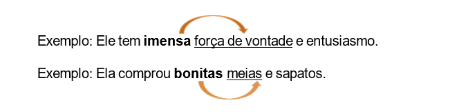

O Incaper, por meio da sua editora, publica produtos editoriais elaborados com base nas ações desenvolvidas e nos resultados alcançados por meio do seu programa de pesquisa, de assistência técnica e de extensão rural, atendendo exclusivamente às suas demandas internas. Esses produtos editoriais devem ser propostos por autores que sejam servidores do Instituto, admitindo-se a participação de profissionais externos ou instituições, como autores e coautores, em temas pertinentes à área de atuação do Incaper.
Para alcançar os fins desejados, uma das ações desenvolvidas foi mapear e desenhar o Processo Editorial do Incaper, reunindo as atividades envolvidas e os respectivos responsáveis por sua execução, com o apoio de ferramentas tecnológicas. Esse processo é composto pelas seguintes etapas:
- Elaboração e submissão dos originais ou projeto de livro pelos autores;
- Avaliação da proposta de publicação;
- Editoração;
- Impressão (quando for o caso);
- Catalogação, divulgação e distribuição.
Essas etapas são desenvolvidas de acordo com a Política Editorial do Incaper, com as Normas de Procedimento Internas (NPIs) e com as orientações contidas neste manual.
As etapas do Processo Editorial do Incaper são apresentadas a seguir (Figura 1).

5.1 Procedimentos operacionais
Para orientar as equipes envolvidas nas atividades que compõem o processo editorial, foram mapeados, desenhados e descritos os procedimentos operacionais referentes a cada etapa acima identificada, incluindo seus subprocessos, contidos nas NPIs apresentadas a seguir.
5.1.1 Elaboração de originais (NPI 029)
Esta norma compreende orientações relacionadas às atividades de produção do original pelos autores e sua submissão à Coordenação Editorial.
Estas orientações têm como público-alvo os servidores interessados em publicar originais pelo Incaper, bem como os demais servidores envolvidos com as atividades editoriais.
A NPI 029 apresenta, de forma detalhada, todas as atividades referentes ao processo de elaboração de originais. Identificada a oportunidade de produção de conteúdo para publicação, os autores devem observar principalmente as seguintes orientações:
- Definir os objetivos, o público-alvo, a linha editorial e o veículo mais adequado para a publicação a ser produzida;
- Certificar-se de que o conteúdo a ser abordado está compatível com a temática pretendida, no caso de publicações de temas multidisciplinares;
- Definir potenciais autores e coautores do quadro do Incaper ou de instituições parceiras, com formação e experiência para cada área de conhecimento envolvida;
- Manter em arquivo todas as figuras originais (gráficos, ilustrações, mapas, fotos, fluxogramas, infográficos, entre outros) utilizadas no texto;
- Avaliar a necessidade de impressão da publicação e elaborar, quando necessário, um plano de distribuição dos exemplares.
5.1.2 Submissão de projeto de livro a ser publicado pelo Incaper (NPI 010)
Esta norma tem como objetivo orientar os servidores do Instituto sobre os procedimentos padronizados para submissão de projeto de livro à Coordenação Editorial do Incaper.
Estas orientações têm como público-alvo os servidores interessados em submeter projeto para publicação de livros pelo Instituto, seja como organizador, autor, coautor ou participantes de quaisquer das etapas de aprovação do projeto.
É importante destacar que antes da elaboração do original, o Autor Correspondente ou organizador deve submeter à Coordenação Editorial um projeto de livro para avaliação prévia pelo Conselho Editorial do Incaper.
A NPI 010 apresenta, de forma detalhada, todas as atividades do processo de submissão de projeto de livro. Contudo, destacamos dois importantes pontos a serem observados pelos autores ou organizadores quanto à elaboração do projeto:
- Selecionar subtemas relacionados à temática principal, nos casos de livro com autoria coletiva;
- Organizar os capítulos dentro de uma linha editorial única, mesmo que a publicação aborde subtemas diversos.
5.1.3 Avaliação de proposta de publicações editadas pelo Incaper (NPI 033)
Esta norma tem como objetivo orientar os servidores do Instituto sobre os procedimentos padronizados a serem utilizados ao avaliar originais submetidos à Coordenação Editorial.
Estas orientações têm como público-alvo os servidores envolvidos na análise dos originais quanto às normas editoriais, no seu encaminhamento aos consultores ad hoc, bem como os autores na análise da viabilidade técnica para realização dos ajustes sugeridos.
A NPI 033 apresenta, de forma detalhada, todas as atividades do processo de avaliação de proposta de publicações editadas pelo Incaper. Contudo, destacamos alguns importantes pontos a serem observados:
Pela Coordenação Editorial:
- Analisar se o original e os documentos complementares recebidos estão de acordo com a Política Editorial, as Normas de Procedimento Internas e este manual.
- Conferir se todas as figuras (gráficos, ilustrações, mapas, fotos, fluxogramas, infográficos, entre outros) que fazem parte do original, a ser analisado, foram enviadas pelo Autor Correspondente. Em seguida, deve encaminhá-las para avaliação prévia da equipe de design (ver item 5.2.6).
- Selecionar consultores ad hoc com formação e experiência compatível com o conteúdo do original.
Pelos autores correspondentes:
- Avaliar, em conjunto com os demais autores, a viabilidade técnica dos ajustes sugeridos.
5.1.4 Editoração
A fase de editoração é parte do Processo Editorial do Incaper e consiste em etapas que vão da revisão de texto e do design editorial (tratamento de imagens, projeto gráfico e diagramação), até o fechamento do arquivo para impressão e/ou publicação no formato digital. Pode ser realizada de três formas distintas:
- Editoração realizada pela GTTC (NPI 036): quando o serviço de editoração é realizado pela Equipe de Revisão Textual e Design Editorial da GTTC ou bolsistas sob sua coordenação.
- Editoração gerenciada pela GTTC (NPI 034): quando o serviço de editoração é prestado por empresa contratada pelo Incaper. O serviço pode ser prestado de forma parcial ou integral por profissionais fora do Instituto. Neste caso, a Equipe de Revisão Textual e Design Editorial da GTTC atua na coordenação das atividades, responsabilizando-se pela orientação dos profissionais e pela avaliação e aprovação da publicação entregue.
- Editoração gerenciada pelo Autor Correspondente (NPI 035): quando o serviço de editoração é contratado e pago diretamente por coordenadores de projetos de base individual (Seag, Fapes e outros). Nesse caso, a Equipe de Revisão Textual e Design Editorial da GTTC atua na coordenação das atividades, fornecendo orientações técnicas para contratação, orientando os prestadores do serviço, avaliando e aprovando a publicação entregue.
As NPIs 034, 035 e 036 apresentam, detalhadamente, todas as atividades do processo de editoração de publicações editadas pelo Incaper. Contudo, destacamos alguns importantes pontos a serem observados pelos autores e pela Coordenação Editorial:
- A partir do momento em que se inicia a editoração, as alterações textuais devem ser restritas apenas àquelas indicadas pela revisão textual, não podendo haver mais alterações de conteúdo.
- As figuras (gráficos, ilustrações, mapas, fotos, fluxogramas, infográficos, entre outros) entregues para editoração devem estar na resolução e com as demais especificidades indicadas pelo Designer (ver item 5.2.6). Caso haja necessidade de substituição de alguma figura, o Autor Correspondente deve fazê-la no menor espaço de tempo possível.
- O Autor Correspondente deve avaliar e aprovar tanto a revisão textual quanto a publicação diagramada com agilidade. No caso de obra coletiva ou em coautoria, deverá avaliar e aprovar com os demais autores.
- É importante que todos os autores assumam o compromisso de não disponibilizar para terceiros as versões preliminares da publicação. Isso significa que os autores não podem compartilhar a versão final antes de estar disponibilizada no site da biblioteca do Incaper (Biblioteca Rui Tendinha - BRT), divulgada nas redes sociais institucionais e/ou em eventos de seu lançamento.
5.1.4.1 Editoração realizada pela GTTC (NPI 036)
Esta norma apresenta orientações relacionadas às atividades de editoração, particularmente no que diz respeito às fases de revisão textual e design editorial realizadas internamente pela equipe da GTTC.
Essas orientações têm como principal público-alvo os servidores envolvidos com as atividades de editoração e o Autor Correspondente.
A NPI 036 apresenta, de forma detalhada, todas as atividades referentes ao processo de editoração realizada pela GTTC. Contudo, é importante destacar um importante ponto a ser observado pela Coordenação Editorial:
- É fundamental que a Coordenação Editorial encaminhe à GTTC todos os documentos e informações contidos no Formulário de Envio de Texto Final, a fim de dar início ao processo de editoração.
5.1.4.2 Editoração gerenciada pela GTTC (NPI 034)
Esta norma apresenta orientações relacionadas às atividades de editoração (revisão textual e design editorial) realizadas por empresa contratada pelo Incaper, coordenadas pela GTTC, com apoio técnico da Equipe de Revisão Textual e Design Editorial. A prestação de serviço pode ser realizada total ou parcialmente por meio de três alternativas:
- A revisão textual é realizada internamente pelo Revisor Textual da GTTC, e o design editorial por uma empresa contratada;
- Pode ocorrer a situação inversa, ou seja, a revisão textual é realizada por empresa contratada, e o design editorial pelo Designer da GTTC;
- Tanto a revisão textual quanto o design editorial são realizados por empresa contratada.
Essas orientações destinam-se principalmente aos servidores envolvidos nas atividades de editoração e ao Autor Correspondente.
A NPI 034 apresenta, de forma detalhada, todas as atividades referentes ao processo de editoração gerenciada pela GTTC. Contudo, é importante destacar alguns pontos a serem observados pela equipe da GTTC e Autor Correspondente:
- O Designer deve solicitar à empresa contratada o projeto gráfico de acordo com as normas editorias do Incaper para aprovação prévia pela GTTC e pelo Autor Correspondente antes da diagramação completa do conteúdo.
- É fundamental que o Autor Correspondente avalie o material revisado ou diagramado com agilidade, dando retorno aos profissionais envolvidos na editoração. No caso de obra em coautoria ou obra coletiva, o Autor Correspondente deve validar as decisões com os autores envolvidos para evitar problemas na aprovação final da publicação.
5.1.4.3 Editoração gerenciada pelo Autor Correspondente (NPI 035)
Esta norma apresenta orientações relacionadas às atividades de editoração (revisão textual e design editorial) realizadas por empresa contratada diretamente pelo Autor Correspondente ou coordenador de projeto, com recursos financeiros de projeto de base individual (Seag/Fapes e similares). Nesse caso, a Equipe de Revisão Textual e Design Editorial da GTTC auxilia o Autor Correspondente, na avaliação técnica e aprovação do serviço prestado.
Essas orientações têm como público-alvo o Autor Correspondente, coordenador de projeto e servidores da GTTC envolvidos com as atividades de editoração.
A NPI 035 apresenta, de forma detalhada, todas as atividades do processo de editoração gerenciada pelo Autor Correspondente. Contudo, é importante destacar que o Autor Correspondente ou o coordenador do projeto responsável pela contratação deve observar principalmente as seguintes orientações:
- Solicitar à Coordenação Editorial/GTTC orientações quanto à correta descrição dos serviços a serem contratados externamente, minimizando problemas decorrentes de dimensionamento inadequado da proposta comercial, ou que estejam incompatíveis com a Política Editorial do Incaper.
- Solicitar ao prestador do serviço a proposta de projeto gráfico, para avaliação prévia pela equipe da GTTC e autores, antes da diagramação do conteúdo.
- Avaliar o mais rápido possível o material revisado ou diagramado, dando retorno aos profissionais envolvidos na etapa. No caso de obra coletiva ou em coautoria, validar sua decisão com os autores envolvidos para não ter problema na aprovação final da publicação.
- Enviar o documento completo diagramado à gerência da GTTC, após avaliação e validação dos autores, para aprovação do serviço prestado.
- Entregar os arquivos finais à equipe da GTTC, após a aprovação e conclusão da editoração, antes do pagamento do serviço, para que sejam posteriormente catalogados pela BRT.
- Aguardar a disponibilização da publicação no site da biblioteca do Incaper, bem como sua divulgação nas redes sociais institucionais e/ou em eventos de lançamento, antes de disponibilizá-la para terceiros. Isso significa que versões preliminares devem ter circulação restrita aos autores e à GTTC.
5.1.5 Impressão, confecção e recebimento de material gráfico (NPI 025)
Esta norma apresenta orientações relacionadas às atividades de solicitação de impressão e recebimento de material gráfico impresso.
Essas orientações têm como público-alvo os servidores do Incaper, envolvidos com as atividades de solicitação e encaminhamento de arquivos de publicações editadas pelo Incaper para impressão, bem como o recebimento do referido material. Pode ser realizada de três formas distintas:
- Impressão contratada pelo Incaper, com recursos gerenciados pela instituição;
- Impressão contratada por coordenador de projeto de base individual;
- Impressão contratada por instituições parceiras.
A NPI 025 apresenta, de forma detalhada, todas as atividades do processo. Contudo, é importante observar o seguinte:
- Nas situações previstas nos itens “b” e “c”, é fundamental que o responsável pela contratação obtenha da GTTC as orientações quanto à correta descrição do serviço de impressão, pois envolve informações técnicas (tipo de impressão, especificação de papel, padrões de cores, tipo de encadernamento, acabamento etc.).
5.1.6 Catalogação e distribuição de publicações (NPI 030)
Esta norma apresenta orientações relacionadas às atividades de recebimento, avaliação, catalogação e distribuição de publicações encaminhadas à Biblioteca Rui Tendinha (BRT).
Essas orientações têm como público-alvo os servidores do Incaper envolvidos com as atividades realizadas no âmbito da BRT.
A NPI 030 apresenta, de forma detalhada, todas as atividades do processo. Contudo, é importante destacar dois pontos:
- O arquivo digital da publicação a ser enviado para a biblioteca deve estar no formato e tamanho adequados ao sistema de informação. O sistema atual (Ainfo) comporta arquivos de até 72 megabytes.
- A BRT distribui as publicações impressas tomando como base o plano de distribuição entregue pelos autores. Havendo necessidade de mais exemplares, a solicitação deve ser enviada por e-mail (biblioteca@incaper.es.gov.br) com o título da publicação e a quantidade desejada. Havendo disponibilidade no estoque, o material será separado e ficará disponível por 20 dias para retirada.
5.1.7 Divulgação de publicações editas pelo Incaper (NPI 037)
Esta norma apresenta orientações relacionadas às atividades de lançamento das publicações editadas pelo Incaper.
Essas orientações têm como público-alvo os servidores envolvidos nas atividades voltadas para a divulgação inicial das publicações editadas pelo Incaper.
O lançamento pode ser realizado das seguintes formas:
- Divulgação padrão - realizada pela GTTC para todas as publicações, contemplando a veiculação de matérias jornalísticas, de vídeos e postagens em redes sociais;
- Divulgação especial - definida pelos autores, com apoio da GTTC, contemplando o lançamento da publicação por meio de evento, além da divulgação padrão.
A NPI 037 apresenta, de forma detalhada, todas as atividades referentes ao lançamento das publicações. Contudo, é importante que os autores e a GTTC observem principalmente as seguintes orientações:
- A discussão, a avaliação da necessidade e viabilidade de lançamento da publicação em evento e o seu planejamento deverão ocorrer durante o processo de editoração. Caso contrário, pode haver atraso na disponibilização da publicação para a sociedade.
- A produção de vídeos e de outras peças de divulgação também deve ser realizada durante o processo de editoração.
Exemplo de citação
A segurança protetora é realizada quando as pessoas estão inseridas em uma rede social e institucional consolidada. Considera-se que quanto mais desamparadas estiverem as pessoas frente a um fenômeno natural, maiores as possibilidades desse fenômeno se transformar em desastres sociais e econômicos (Costa, 2006, p. 86).
Exemplo de marcadores

Artigo de revista científica em meio eletrônico:
Elementos essenciais: autor, título do artigo e subtítulo (se houver), seguidos do título da revista, local (cidade, se houver), volume e/ou ano, número ou fascículo, paginação inicial e final do artigo, informações de período, ano de publicação, informações pertinentes ao suporte eletrônico (DOI, se houver) seguidos das expressões “Disponível em:” (endereço eletrônico do documento) e “Acesso em:” (data de acesso ao documento).
| Tipo | Ano 2022 | Ano 2023 |
|---|---|---|
| Exemplo 1 | 15% | 22% |
| Exemplo 2 | 10% | 18% |
| Exemplo 2 | 10% | 18% |
Tabela 12 - Produção a partir de outras frutas nas agroindústrias entrevistadas